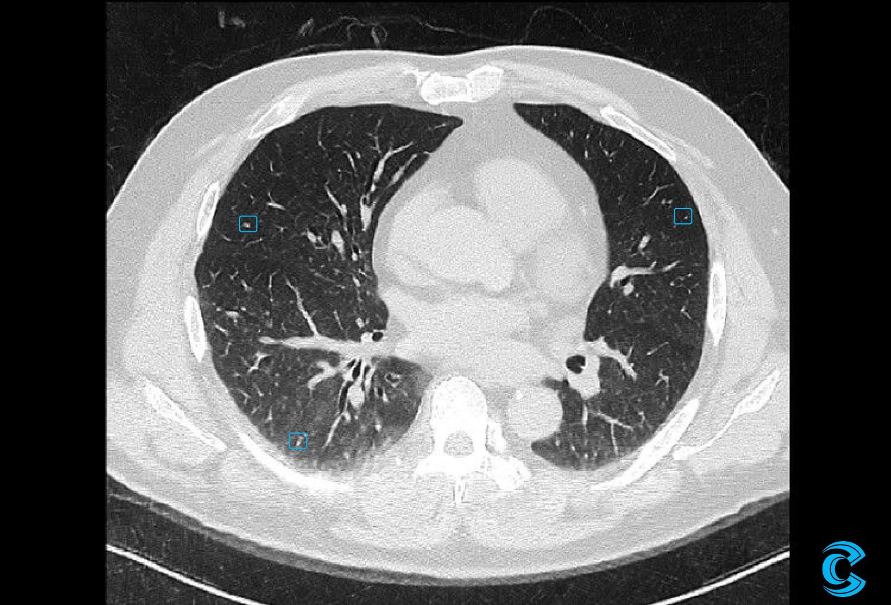

Experience Unprecedented Image Clarity with CTech
Our AI is trained on millions of noise‑corrupted CT images, enabling the model to precisely learn and isolate noise signatures in CT scans. It distinguishes thousands of noise patterns found in low‑dose and ultra‑low‑dose CT data and instantly produces high‑quality, low‑noise images. Anatomical detail is preserved while strong noise is removed—without distortion or a plastic appearance.


120 kV / 30 mAs / 1mm
Body Parts
Select a body part to see detailed information about CTech's AI-powered enhancement for that specific scan type.